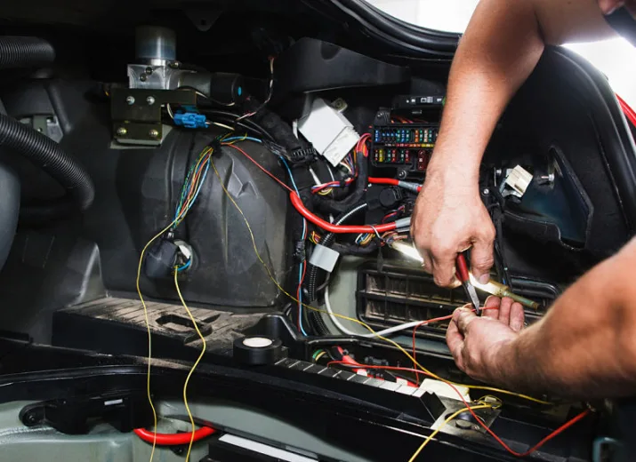

ELECTRONICA Y ELECTRICIDAD AUTOMOTRIZ
Diagnostico, reparacion y mantension de circuitos electricos y componentes. Escaneos, funcionamiento de airbags, climatizacion, direccion asistida, computadoras, sensores, encendido, inyeccion electronica y demas
cha